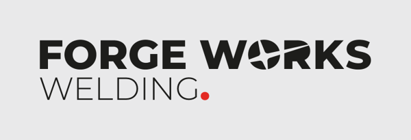
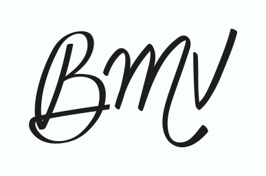
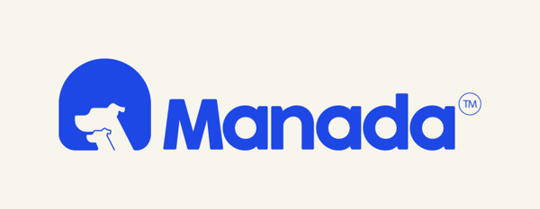
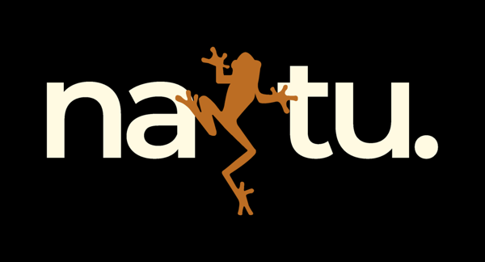
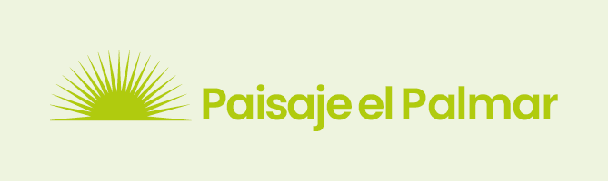

Diseñador gráfico con experiencia comprobada en branding e identidad visual, logotipos, redes sociales,
anuncios publicitarios (Meta Ads), diseño web, empaques y material POP. He creado identidades y
campañas para marcas de perfumería (retail), veterinaria, turismo, paisajismo y construcción, en Venezuela y EE. UU.,
siguiendo lineamientos visuales de marca con buen ojo para la composición, la tipografía y la estética limpia.
Manejo IA a diario (Higgsfield, Google Flow, Nano Banana, Gemini con MCP) para generar fotos,
imágenes y contenido a escala. Organizado y autónomo, de la idea a la entrega final.
Marcas con las que he trabajado





Forge Works Welding · BMV Perfumes · Manada · Natu · Paisaje el Palmar (casos en la pág. 2)
Experiencia
Diseñador Gráfico Independiente
2021 – Actualidad
Identidad visual, manuales de marca y contenido para Forge Works Welding (EE. UU., piezas en inglés), Manada (clínica veterinaria), Natu (senderismo) y Paisaje el Palmar (paisajismo).
Anuncios para Meta Ads según el embudo de conversión, con llamados a la acción claros y variantes para pruebas A/B.
Posts, carruseles, stories y reels para Instagram, Facebook y TikTok; mockups web, iconografía e interfaces para e-commerce.
Ilustración vectorial, personajes de marca y generación de imágenes y variantes con IA.
Diseñador de Branding · Perfumería BMV
dic 2024 – ago 2025
Logotipo y manual de marca de BMV Perfumes, tienda de perfumería en Petare (retail); catálogo de BMV Sexy.
Piezas promocionales para el punto de venta y redes (con QR y datos del local), sorteos y la campaña de lanzamiento de perfumes de bolsillo.
Diseñador de Branding (Prácticas Profesionales) · Diplomados VIP
mar 2025 – jul 2025
Creación de servicios de branding: logotipos, sistemas visuales y aplicaciones de marca.
Diseñador Web (Mockups) · SEPAC
sep 2025
Creación de mockup web: estructura de la página, propuesta visual e interfaz.
Formación
Curso de Diseño Gráfico · Diplomados VIP · 2024
Bachiller en Ciencias · Instituto Mano Amiga, Filas de Mariche · 2019
Forge Works Welding · Soldadura y herrería · EE. UU. · 2026
Reto: comunicar la fuerza del trabajo pesado con un diseño limpio y profesional, y vender a propietarios en EE. UU.
Qué hice y por qué: logotipo con versión negativa para fondos oscuros y variante compacta "FWW" para formatos reducidos; área de protección medida con el trazo de la "F". Paleta de contraste triádico: el blanco da pureza, el negro jerarquía y el rojo se usa de forma táctica para guiar la vista a la información clave, la misma lógica que apliqué en sus anuncios.
Entregables: manual de marca, anuncios para Meta Ads en inglés (CTA "Free inspection", "Book now") y carruseles.
BMV Perfumes · Tienda de perfumería en Petare · dic 2024 – ago 2025
Reto: crear una marca con valor emocional para la dueña y que destaque en el punto de venta y en redes.
Qué hice y por qué: el logo parte de la firma de la madre de la dueña; lo redibujé con líneas más limpias y ordenadas para darle fuerza sin perder su origen. Elegí la tipografía Nohemi por ser minimalista, con detalles que suavizan la composición de las publicaciones, y una paleta verde con naranja para los llamados a la acción.
Entregables: manual de marca, piezas para redes y para el local (con QR y datos de contacto), sorteos, campaña de perfumes de bolsillo y catálogo de BMV Sexy.
Manada · Clínica veterinaria y bienestar de mascotas
Reto: transmitir excelencia médica y trato cálido, para que el dueño vea la clínica como un lugar seguro y sin estrés para su mascota.
Qué hice y por qué: el arco del símbolo funciona como refugio y hogar; dentro, un perro grande y uno pequeño representan la "manada" y la familia. Azul con verde menta y crema para unir confianza y calidez, con versiones de color para cualquier fondo.
Entregables: logotipo, manual de marca y posts para redes.
Natu · Turismo de naturaleza y senderismo en Venezuela
Reto: una identidad que conecte con la naturaleza venezolana y con el espíritu de aventura.
Qué hice y por qué: una rana trepa entre las letras del nombre como símbolo de fauna y exploración. Paleta terrosa (crema, naranja tierra, verde oliva y verde bosque) y Montserrat por su legibilidad en cualquier aplicación.
Entregables: logotipo, versiones de color, paleta, tipografía y aplicaciones.
Paisaje el Palmar · Paisajismo y mantenimiento de jardines
Reto: que el cliente pase de ver las plantas como decoración a agendar un servicio.
Qué hice y por qué: carrusel de tres láminas con estructura gancho, beneficios y llamado a la acción ("Las plantas no son adornos, son aliadas de tu salud", "Agenda ya"), y anuncios de servicio con la paleta verde lima de la marca.
Entregables: carruseles y anuncios para redes sociales.
Experiencia con IA aplicada al diseño
Imágenes y mockups: genero fotos de producto, escenas y mockups con Higgsfield, Google Flow y Nano Banana, y los integro en piezas finales con Photoshop.
Automatización a escala: uso Gemini con MCP para automatizar variantes de diseño, redimensionado a múltiples formatos y tareas repetitivas, manteniendo la coherencia de marca.